摘要
這支長達兩小時的教學影片，表面上是一堂 Python 入門課，實際上想解決的是一個更尖銳的問題：當 AI 已經能寫出可以執行的程式碼時，人類還有沒有必要學程式設計？作者的答案是——不需要學「打字」，但必須學「思考」。全片依序走過 Variable、If & Else、List、For Loop、Range()、Double Loop、Function、Scope、Value vs. Reference、Dictionary、Recursion 十一個技術章節，但真正串起全片的是同一條隱藏邏輯：程式設計的本質，是在正確的時間點，讓正確的資料存在正確的位置。本篇導讀依照原片章節順序逐一解析，拆解每一章想打破的直覺、想建立的心智模型，以及它們如何一層一層疊加成一套完整的程式設計思維——並在結尾回答影片開場那個最尖銳的問題。
Intro：一個違反直覺的開場——AI 越強，你越需要懂這個
這支影片的原始版本發佈於 YouTube 頻道「Visual Kernel」，該頻道目前擁有約 4.41 萬位訂閱者，本片上線於 2026 年 7 月 14 日，累積觀看次數已超過 17 萬次。影片以 Potato 這個角色貫穿全片，用生活化情境帶出變數、迴圈、函式等主題，並在描述欄附上斗篷（Chapters）時間軸，方便觀眾直接跳轉到特定主題——這也是本篇導讀依照原片章節順序逐一整理的原因。為了讓不熟悉英文聽力的讀者也能完整吸收內容，本篇同時附上經過繁體中文字幕燒錄的版本，置頂供讀者直接線上觀看。
多數人對「還要不要學程式設計」這個問題的直覺答案是：不需要，把需求講清楚，AI 就會生出程式碼。這支影片一開場就把這個直覺攔下來，給出一個更精確的版本——你不需要學會「手寫語法」，但你必須擁有「程式設計思維」。
理由其實很具體：純粹依賴 AI 生成程式碼的人，產出的價值會在某個階段觸頂，因為他們不知道要問什麼問題、看不出 AI 給的方案哪裡有隱藏的邏輯漏洞、也無法判斷一段程式碼「能跑」和「跑得對」之間的差距。AI 解決的是「怎麼寫」，而程式設計思維解決的是「該想什麼」。這也是為什麼整支影片幾乎沒有教語法細節，而是花了大量篇幅在建立心智模型——因為心智模型才是 AI 無法替你長出來的部分。
第一章
Variable（變數）：等號不是等於，是動作
我們從小學到的等號是靜態描述（「1+1=2」），但在程式裡，等號其實是一個動作指令——把右邊算出來的值，存進左邊那個名字裡。這個重新定義非常關鍵，因為後面所有變數賦值的「反直覺」現象都建立在這個基礎上：像 n = n + 1 這種寫法之所以合法，是因為右邊的 n 在被計算的當下，取的是它「當前」的值，而不是某種數學上的恆等式。
影片用連續六道小測驗逼你把這個模型內化，其中最有代表性的是那個經典的「交換兩個變數卻沒交換成功」陷阱：當你寫 a = b 之後，a 原本的值就已經永久遺失，除非你事先用第三個變數把它接住，再賦回去。這不是語法瑣事，而是在教一個核心事實——賦值是有代價的覆寫動作，每一次賦值都可能讓舊資料永遠消失。另一個容易被忽略的細節是：Python 的變數沒有固定型別，同一個名字可以先存字串、後存數字，這種彈性看似方便，實際上把「追蹤此刻這個名字代表什麼」的責任，完全交還給了寫程式的人。
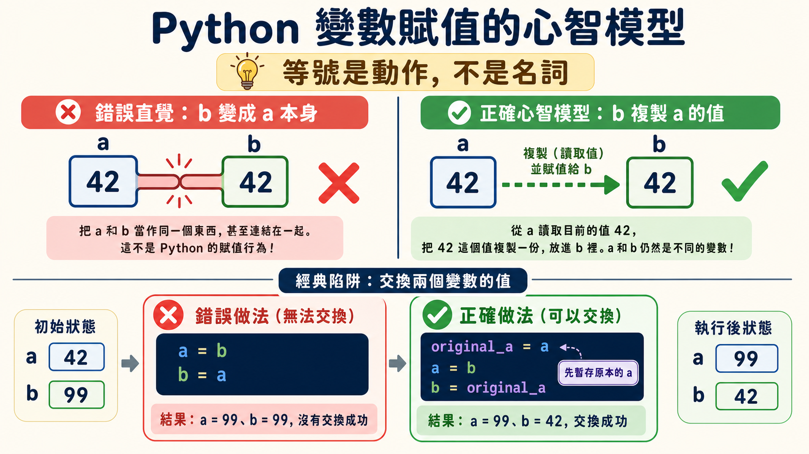
第二章
If & Else：布林值與電路裡的邏輯閘
有了會變化的變數之後，程式需要有做決策的能力。這一章引入布林值（True / False）與比較運算子，讓程式能根據當下條件走向不同分支。影片刻意示範了幾種常見誤區：忘記在 if 敘述結尾加冒號、縮排錯誤導致程式碼歸屬錯誤的區塊、以及 elif 與巢狀 if 之間的本質差異——elif 是在同一層新增一條並列的判斷路徑，而巢狀 if 是從既有路徑往下延伸出一條子路徑，兩者的差別在於「條件之間是並列還是層層依賴」。
這一章最有意思的延伸，是把邏輯運算子 AND / OR 對應到電路裡的邏輯閘：AND 像是把兩個開關串聯，只有兩個都導通，電流才能通過，對應到程式裡就是兩個條件都必須為 True 整體才為 True；OR 則像是兩個開關並聯，只要有一個導通就能通電，對應到只要任一條件為 True 整體就為 True。這個類比把抽象的布林邏輯，直接錨定回一個看得見、摸得著的物理直覺上——邏輯運算子從此不再是死記的真值表，而是一種可以在腦中「畫電路」來驗證的推理工具。
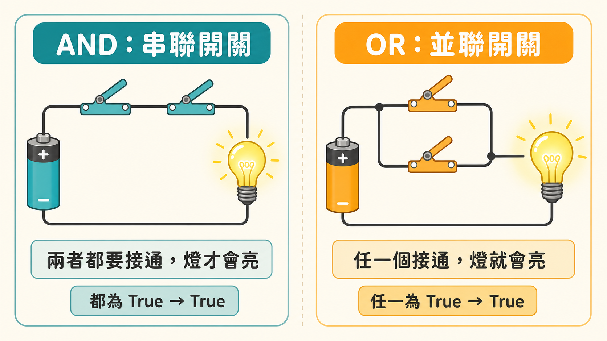
第三章
List（串列）：資料容器與被忽略的參考本質
串列（list）是能容納任意數量資料的容器，支援讀取、修改、新增、刪除四種基本操作。這一章刻意選了一個很大的實驗當教材——把整部小說的文字處理成串列，示範 .lower()、.replace()、.split() 這些字串方法如何把一大段雜亂文字，轉換成一個乾淨、可以逐一檢查的資料清單，再用 in 關鍵字快速確認某個詞是否存在其中。
但這一章真正埋下的伏筆，是一句刻意輕描淡寫的提醒：當你把一個串列指派給變數時，這個變數存的並不是串列本身，而是一個指向串列的參考（reference）。影片當下沒有深究原因，只請讀者先建立這個心智模型——這個伏筆直到後面「傳值與傳址」那一章才會被完整引爆，也解釋了為什麼串列的修改行為，和數字、字串的修改行為完全不同。
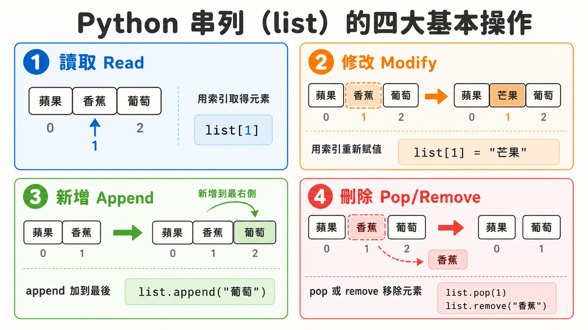
第四章
For Loop：把重複自動化，尋找微小規律解決大問題
如果要選一個貫穿全片的核心概念，for 迴圈當之無愧。這一章沒有直接丟出語法，而是先讓學習者體會「手動把同一段程式碼複製貼上五千次」的荒謬與痛苦，再讓迴圈變數登場——這個順序安排很刻意，它要你先感受到「重複本身就是一種浪費」，迴圈才會從一條語法規則，變成一種解決問題的策略。
影片用三個範例把迴圈的思考模式具體化：計算串列總和（迴圈外初始化一個變數為 0，迴圈內不斷累加）、找出串列最大值（迴圈外初始化一個變數記錄目前看過的最大值，迴圈內用條件式決定要不要更新）、建立去重複的新串列（迴圈外建立空串列，迴圈內用 not in 判斷是否已存在再決定要不要加入）。這三個範例的共同結構，幾乎是日後所有迴圈應用的原型。而影片特別強調一個常見錯誤——把該放在迴圈外的累加變數，不小心放進了迴圈內部，導致每次迭代都被重置歸零，這正是初學者最容易踩的陷阱之一，背後的教訓是：必須清楚判斷哪個變數該活過整個迴圈，哪個變數只是暫時借用。
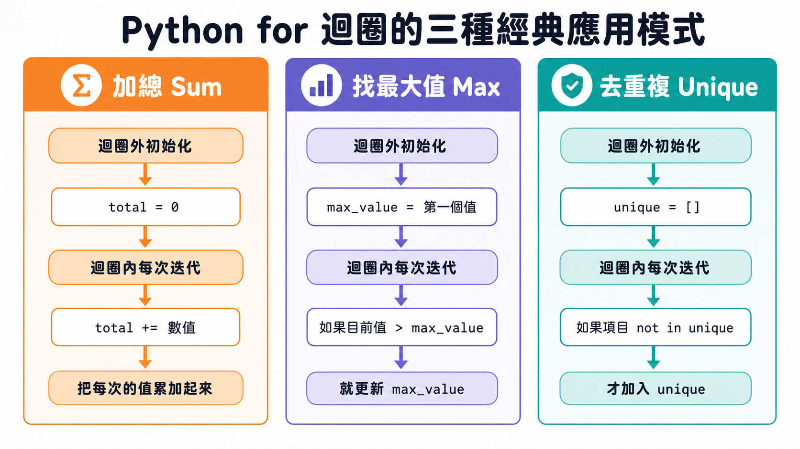
第五章
Range()：兩種走訪策略的取捨
range 物件是一串可以被迭代的連續數字，它讓「走訪串列」多了一種間接方式：直接走訪串列本身、或是走訪串列的索引值，再用索引值去讀取對應元素。影片用一個具體案例說明為什麼間接法有時候是必要的——如果想幫一份薪資清單裡的每個人加薪，直接走訪串列元素只會改變迴圈變數本身，不會影響到串列裡實際的資料；唯有走訪索引值，再用索引去修改串列裡的元素，才能真正更動原始資料。
這一章另一個亮點，是把數學裡的階乘與 Sigma 求和符號，重新翻譯成 Python 的角度來理解：階乘就是把 range 物件裡的每個數字連乘、Sigma 求和就是把 range 物件裡的每個數字連加——兩者本質上都只是套了一層特定運算的 for 迴圈。這個翻譯的意義在於，它讓「看到數學符號就恐懼」的學習者，發現自己其實早就會做這件事了，只是換了一套符號在描述。
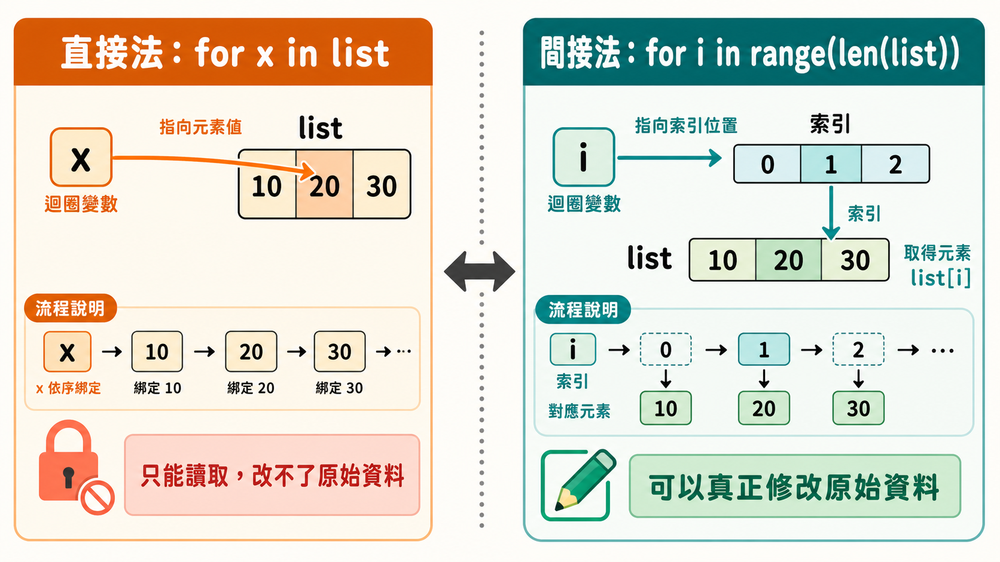
第六章
Double Loop：迴圈裡的迴圈，以及被忽略的複雜度
雙重 for 迴圈的直覺陷阱在於：大多數人以為它只是「兩個獨立的迴圈變數各自走訪各自的可迭代物件」，但實際運作方式是內層迴圈必須完整跑完一輪，外層迴圈才會往前一步——複雜度不是兩倍，而是平方等級的增長。
影片用撲克牌組合（13 種點數 × 4 種花色）示範最單純的巢狀迴圈：兩層迴圈彼此獨立，互不影響。但接著馬上示範一種更難懂的版本——內層迴圈的範圍取決於外層迴圈當下的值，兩者之間存在真正的依賴關係。這種依賴關係的實際用途，是把「計算單一數字的階乘」擴充成「計算一整份清單裡每個數字的階乘」：外層負責走訪清單裡的每個數字，內層負責針對該數字算出階乘。而其中一個極容易被忽略的細節是，累加階乘用的變數必須在每次外層迴圈前進時重設回初始值，否則上一輪殘留的計算結果會污染下一輪——這正好呼應了第四章「迴圈外初始化位置決定正確性」的教訓，只是在雙層結構裡風險又更高了一層。
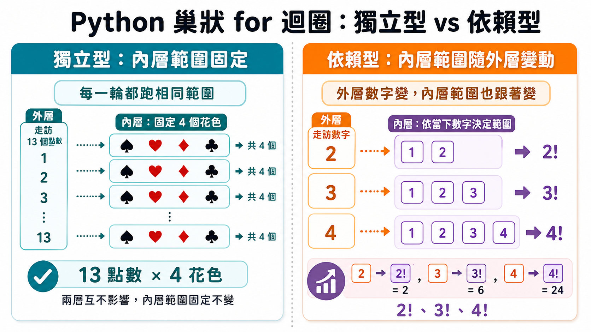
第七章
Function（函式）：輸入到輸出的沙盒
多數人對函式的印象停留在數學課本裡的靜態座標圖，但影片強調函式的本質是動態的轉換動作——給定輸入，函式對其做處理，產生輸出。這一章直接點名批評坊間教學把函式講成「把 print 語句打包起來」的做法，並用一個對照範例揭穿這種誤解的危險之處：一個沒有 return 的函式，即使內部有 print，呼叫後拿到的回傳值永遠是 None——因為 Python 會在沒有明確 return 時，暗中回傳一個代表「無」的值。這解釋了為什麼函式內部用 print 自我安慰，和真正把資料 return 出去，是完全不同的兩件事。
另一個關鍵概念是：每當函式被呼叫，就會建立一個一次性的沙盒——參數與函式內部的區域變數都活在這個沙盒裡，函式執行完畢、沙盒就會消失，連同裡面所有的變數一起消失。這個沙盒模型不只是抽象比喻，它直接決定了「函式合成」的求值順序：當一個函式呼叫的輸入是另一個函式呼叫時，Python 永遠會先把內層的函式求值完畢，拿到具體的回傳值，才會把這個值當作輸入，傳給外層函式——就像剝洋蔥一樣一層一層往內算，再一層一層把結果往外傳遞回去。
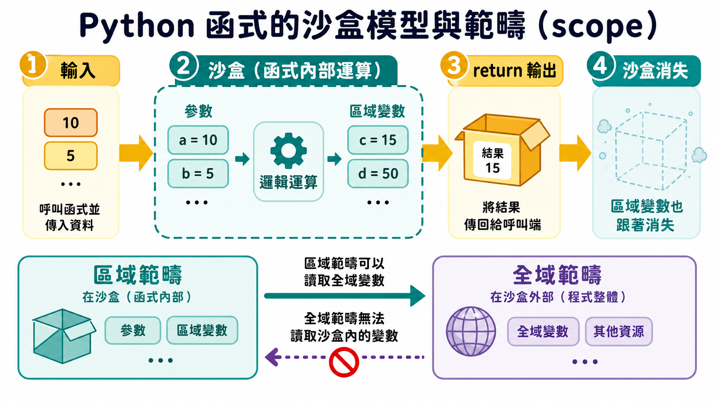
第八章
Scope（範疇）：沙盒內外的能見度規則
延續函式的沙盒模型，這一章正式定義「區域範疇」與「全域範疇」的關係：區域範疇就是沙盒內部的一切，全域範疇是沙盒外部的一切。核心規則只有一條，但影響深遠——區域範疇可以讀取全域範疇，但全域範疇永遠讀不到區域範疇內部的東西。當函式內部找不到某個變數時，它會往外查找全域範疇；但當函式執行結束、沙盒消失後，外部世界永遠無法再存取那個只存在於沙盒裡的區域變數，即使它曾經在執行過程中確實存在過。
影片也刻意示範了一個容易讓人困惑的情境——函式內部建立一個與全域變數同名的區域變數，這種寫法在真實工作環境中幾乎沒人會用（因為容易混淆），但透過它可以清楚看到範疇查找的優先順序：程式永遠優先在區域範疇裡尋找，找不到才會往外查詢全域範疇。理解這條規則，才能真正弄懂為什麼「函式內部修改的變數」有時候會影響外部，有時候完全不會——而這正是通往下一章「傳值與傳址」的必要橋樑。
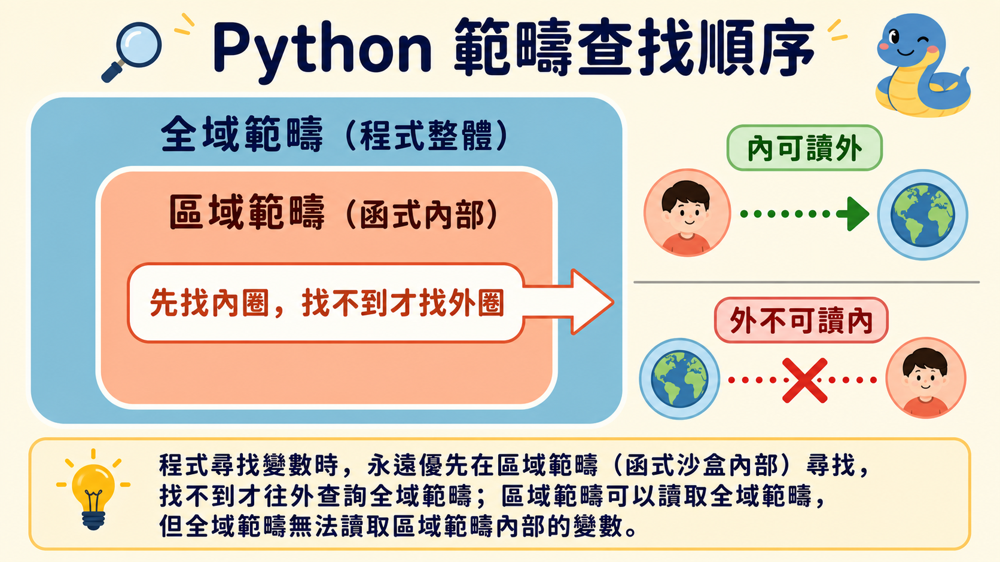
第九章
Value vs. Reference（傳值與傳址）：同一份資料，兩種指派邏輯
這一章解答了第三章埋下的伏筆，也是整部影片心智負荷最重的一章。核心結論是：數字與字串這類輕量資料型別，在賦值與傳遞給函式時，都是複製數值本身——修改新變數對原始變數完全沒有影響；而串列這類容器型別，賦值與傳遞的都是指向同一份資料的參考——修改新變數會直接影響到原始資料，因為兩者從頭到尾指向的都是記憶體裡同一塊東西。
影片給出兩層解釋來說明「為什麼要設計成這樣」：第一層是生活化比喻——分享一篇長文章時，傳送完整內容既慢又浪費，傳送一個連結才是聰明做法，參考就像這個輕量的連結；第二層是電腦硬體層級的解釋——大型資料存放在堆積記憶體（heap），函式執行需要的資訊存放在堆疊記憶體（stack），與其把整份龐大資料複製一份塞進堆疊（既慢又佔空間），不如只放一個指向堆積的參考，CPU 需要時再順著參考去讀取。這也是為什麼影片給出一個實用的經驗法則：輕量型別走傳值、重量型別（串列、字典、物件）走傳參考——這不是所有語言都適用的鐵律，但在 Python 裡是一個非常可靠的直覺起點。
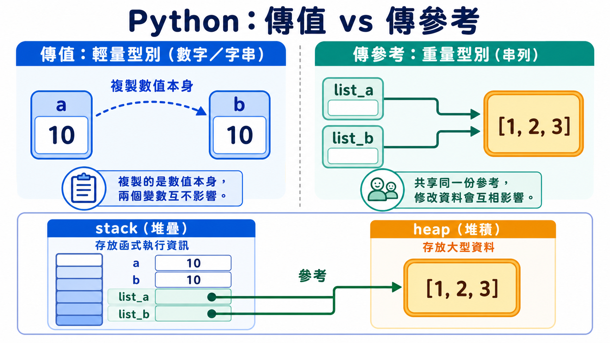
第十章
Dictionary（字典）：讓查詢本身變得有意義
串列已經很好用了，但它有一個先天限制——只能用數字索引存取元素，而數字本身不具備任何意義。字典解決的正是這個問題：它儲存的是鍵值對（key-value pair），讓你可以用一個有意義、可讀的鍵（例如餐點名稱），直接查到對應的值（例如價格），而不必記住某個資料躺在第幾個位置。
影片用建立數位菜單當實例，示範字典的四大操作：用中括號存取數值、新增新的鍵值對、修改既有鍵值對（語法與新增完全相同，差別只在於鍵是否已存在）、用 .pop() 刪除鍵值對。字典同時也是可迭代物件，但因為它同時擁有鍵與值兩種資訊，走訪方式因此多了選擇：.keys() 只走訪鍵、.values() 只走訪值、.items() 搭配兩個迴圈變數同時走訪鍵與值。這一章的收尾範例把字典的價值徹底展現出來——用一本小說的全文串列，搭配一個「角色名字對應出現次數」的字典，只需一個 for 迴圈，就能在極短時間內統計出每個角色在書中出現的頻率，間接量化出「誰是故事裡最重要的角色」。
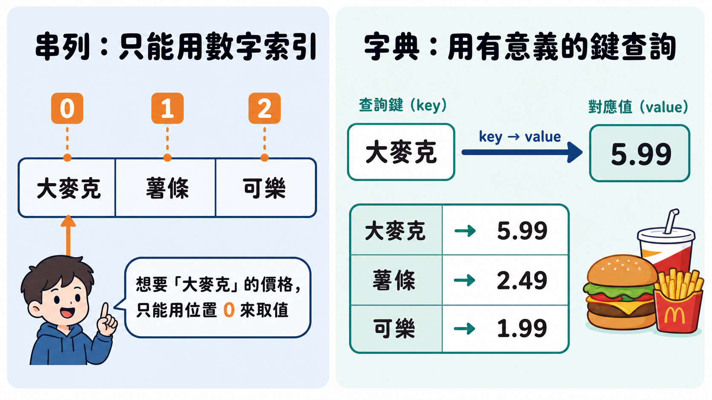
第十一章
Recursion（遞迴）：函式呼叫自己的信心跳躍
遞迴是全片心智門檻最高的一章，它教的是一種函式在完成自己定義的過程中，呼叫自身來解決問題的技巧。影片用階乘作為經典入門案例，拆解出遞迴函式必須具備的三個要素：函式會呼叫自身；函式有一個基本條件（base case）決定最小規模問題怎麼處理，防止無限遞迴；函式有一個遞迴條件（recursive case），每次呼叫都讓問題規模往下縮小一步，逐步逼近基本條件。
影片特別命名了一個概念——「遞迴的信心跳躍」：在你還沒把函式定義完整之前，你必須先信任這個函式已經能正確處理更小規模的問題，才能安心地在定義內部呼叫它自己。這種先信任、後驗證的思考方式，和一般寫程式時「每一步都要親眼確認」的習慣完全相反，也是初學者最容易卡關的地方。反轉字串的第二個範例進一步強化了這個思路：把字串拆成「第一個字元」加上「其餘字元」，只要信任遞迴呼叫能正確反轉剩餘的部分，再把第一個字元接到最後面，問題就解決了——這種「把大問題縮小成同構的小問題，再用同一套邏輯往下解」的思考方式，正是遞迴真正想教會你的東西。
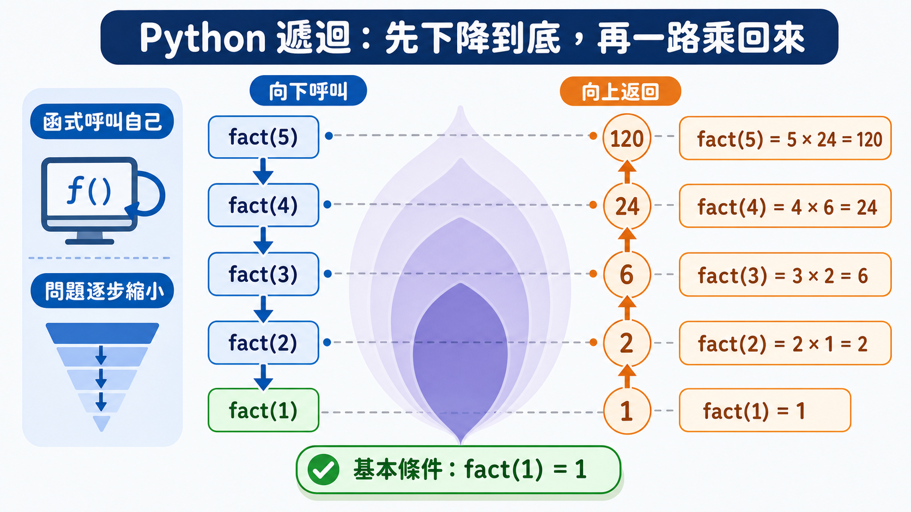
深層真相：程式設計是一門管理「狀態存活期」的手藝
把十一章的內容疊在一起看，會浮現出一個更深的規律：整部影片其實都在講同一件事——資料在什麼時間點存在、存在於哪個範圍、又在什麼時候消失、被誰看見。變數的可變性，是這個問題最初的形式；迴圈把狀態管理自動化，同時也放大了初始化位置錯誤的風險；函式用沙盒把狀態封裝起來，範疇規則定義了沙盒內外的能見度；傳值與傳址則揭示了「複製」與「共享」這兩種完全不同的資料存在方式；字典讓資料之間的關聯本身變得可查詢；遞迴則是把同一套邏輯，套用在不斷縮小的問題規模上，直到觸底為止。每一章都在同一條軸線上，往下延伸出新的複雜度。
結論
這支影片表面上按章節教了變數、條件、串列、迴圈、函式、範疇、傳值傳址、字典與遞迴，但真正的教學目標只有一個：讓你在讀到任何一段程式碼時，能自動在腦中重建出「資料何時存在、存在哪裡、何時消失、被誰看見」這張地圖。這也是為什麼影片反覆用「先讓你錯一次直覺、再糾正你」的方式教學——因為程式設計思維本來就不是靠記語法練出來的，而是靠一次次把錯誤的心智模型打掉重建練出來的。
回到影片開場那個問題：AI 時代還需不需要學程式設計思維？這篇導讀想留給讀者的收穫是——你或許永遠不需要自己手寫一個完整的迴圈或一個遞迴函式，但只要你能看懂「這個變數該活多久」「這段賦值覆蓋了什麼」「這個函式的輸入輸出到底是什麼」「這份資料是被複製了還是被共享了」，你就有能力審視、質疑、修正 AI 產出的程式碼，而不是全盤照單全收。這種審視能力，才是這支影片真正想留給每一個觀眾的東西——也是為什麼即使兩小時很長，它依然值得一次看完、甚至反覆回顧。